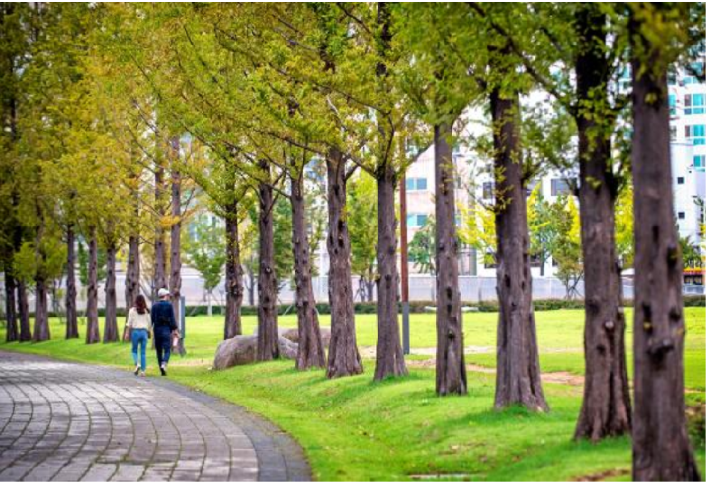
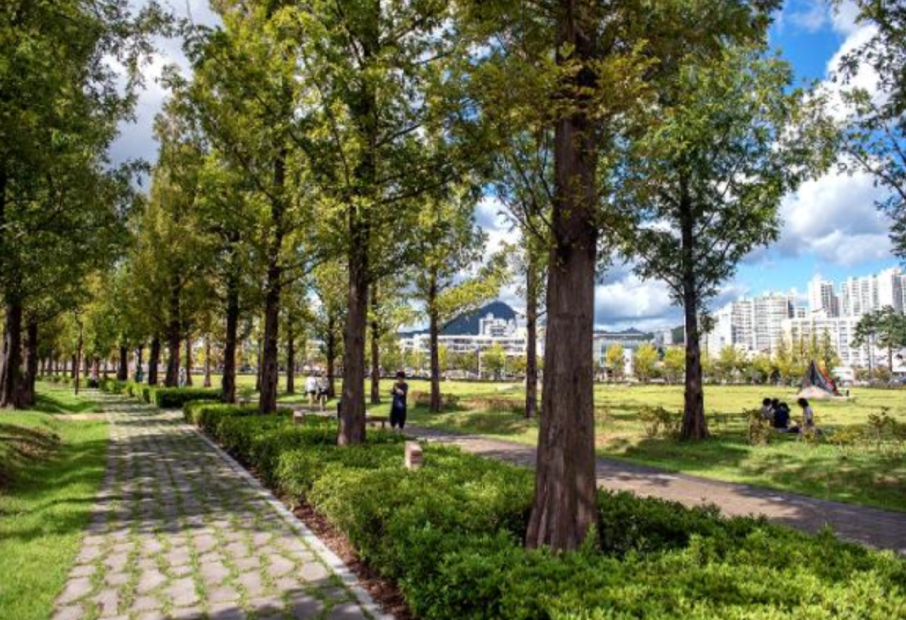
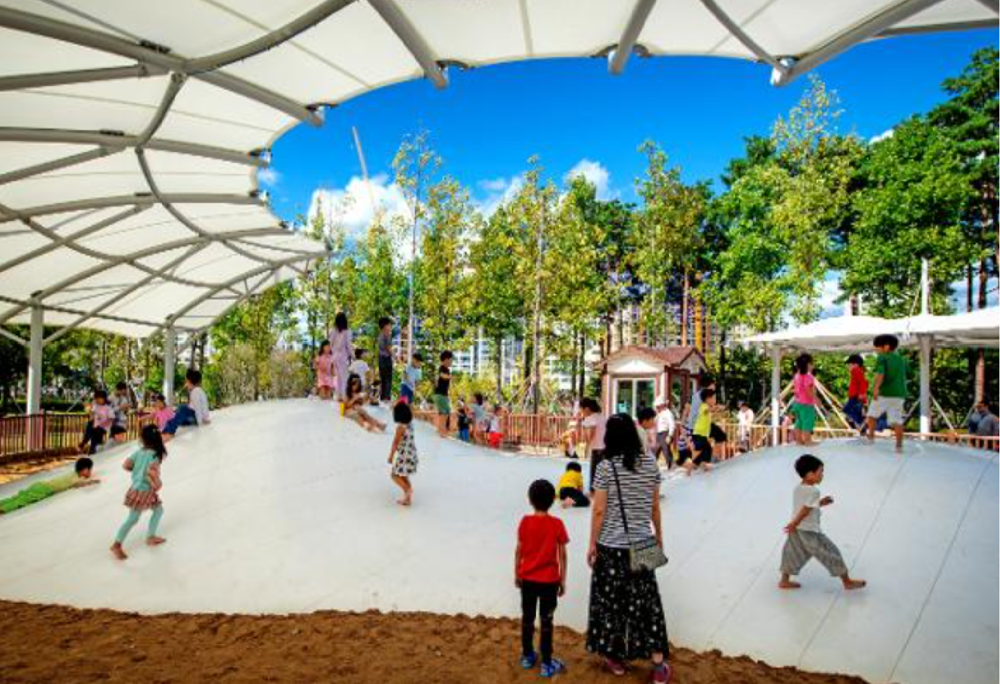

부산시민공원
- 부산시민공원
- 부산시민공원에서 가장 유명해진 스폿, 여기선 누구나 한쪽 발을 내딛으며 까만색 우산을 높이 들어야한다.
이른바 ‘뷔 로드’라 불리는 방탄소년단의 뷔가 인증샷을 남긴 곳이다.
포즈를 따라하며 즐거워하는 사람들을 뒤로 하고 부산시민공원의 중심, 넓디넓은 ‘하야리아 잔디광장’에 이른다.

부산시민공원
- 부산시민공원
- 삼삼오오 돗자리를 깔고, 준비해 온 음식을 먹으며 오후의 여유를 즐기는 사람들. 아이들은 벌써 배를 채웠는지 잔디광장으로 나가고 없다.
그냥 지나치기 아쉬워 가장자리에 자리를 잡고 잠시 쉬어가 보기로 한다. 따뜻한 햇살과 시원한 바람, 그리고 녹음의 싱그러움이 온몸을 스친다.

부산시민공원
- 부산시민공원
- 그러고 보니, 시민공원에는 아이들과 함께 할 수 있는 곳이 천지에 널렸다. 예약만 하면 체험이 가능한 공방도 보이고,
숲속 북카페도 한자리 차지하고 있다. 다른 쪽으로 고개를 돌리니 어린이가 맘껏 뛰어놀 수 있는 놀이시설이 참 다양하다.
방방 뛰노는 아이들에게서 활기찬 부산의 미래를 본다.
